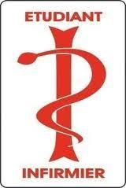

Bonjour à toutes et à tous, ce site est dédié specialement au personnes qui veulent faire le métier d'infirmier(e)s. Ce site vas aborder le métier, les études pour devenir infirmier(e)s. Ce metier n'aura plus de secret pour vous. Bonne lecture ! ;)
Je souhaite choisir la filière Technologique et persuivre mes études dans la catégorie STSS (Science.Technologique.Sanitaires.Et.Sociales) pour ensuite continuer mes études dans un IFSI: Ecole d'infirmerie. Ce projet de devenir infirmier me tiens beaucoup à coeur et je poursuivrai mes efforts pour réaliser mon reve
Nous allons tout de suite aborder un sujet TRES important. C'est les études.
Pour ce métier vous devrez réaliser entre 3 à 5 ans d'étude,j'ai choisi de prendre 3 ans d'études car la différence est que en 3 ans nous pouvons devenir infirmier(e) général et en 5 ans nous pouvons devenir infirmier(e)s spécialiser.
Pendant vos 3 à 5 ans d'études, vous allez faire des stages de 4-5 semaines qui vous amènerons a travailler en E.P.H.A.D: Etablissement.D'hébergement.Pour.Personnes.Agées.Dépendantes ou meme dans un C.H.U dans votre ville ou dans une autre ville.
J'allais oublier de vous parler aussi des concours et des épreuves (partiels,stages) à réaliser pour passer de 1er année à 2eme années, ces concours sont très important pour evoluer dans votre promotion dans votre ISFI, les stages que vous avez réaliser seront aussi noter donc travailler le plus possible pour avoir une très bonne appréciation ;)
Avant de se lancer dans la formation en soins infirmiers, il est essentiel de comprendre les aspects et les enjeux du métier infirmier auquel on se destine : son rôle et ses missions, les compétences et qualités requises, le statut, le cadre et les lieux d’exercice, les conditions de travail, les rémunérations et les spécialisations et évolutions de carrières possibles. Être infirmier, c’est exercer un métier exigeant et gratifiant tourné vers l’autre. Cela demande un réel engagement de soi, une grande implication personnelle et beaucoup d’humanisme. La charge de travail est importante - horaires décalés, travail de nuit, de week-end, pénibilité physique… - ainsi que les responsabilités qui y sont associées. Quant à la gestion émotionnelle face à la douleur, la vulnérabilité et la mort, elle est essentielle. Le quotidien du métier, riche de relations humaines, de missions et responsabilités diverses, exercé en équipe, dans de nombreux lieux (hôpital, clinique, Ehpad, soins à domicile, ONG…) et avec la possibilité d’évoluer et de se spécialiser dans différents domaines, en fait un métier très porteur pour les années à venir
Métier infirmier : l’essentiel à savoir Quelles études ? La formation en Institut de formation en soins infirmiers (IFSI) dure 3 ans et se compose de 6 semestres de 20 semaines chacun, validant les 180 ECTS pour obtenir le DEI (diplôme d’État Infirmier) équivalent à un grade de Licence. Elle comprend 50% d’enseignement théorique en IFSI et 50% de stages cliniques, équivalant à 4 200 heures de formation au total (cours magistraux, travaux dirigés, travail personnel guidé, formation clinique, stages à chaque semestre de la formation). Quel est le statut d’un infirmier ? Il existe 4 statuts professionnels différents, avec la possibilité de changer de statut en cours de carrière. L’infirmier peut être : fonctionnaire (fonction publique d’Etat, fonction publique territoriale ou fonction publique hospitalière) ; salarié, pour une entreprise privée ou une association ; militaire infirmier ou personnel civil des armées ; installé en libéral. Quelles compétences requises ? Des compétences théoriques et pratiques sont exigées bien sûr, mais ce métier requiert aussi rigueur, dextérité, vigilance, conscience professionnelle et sens des responsabilités, autonomie, sens de l’écoute et de la communication, résistance physique et psychologique, résistance au stress, patience, sens de l’organisation et de l’observation, respect et discrétion. Quelles obligations déontologiques ? Être infirmier implique de respecter son code de déontologie. Il est notamment soumis à l’obligation du respect de la vie et de la personne humaine, sans discrimination, est tenu au secret professionnel et a le devoir d’actualiser et de perfectionner ses connaissances professionnelles. Quelles rémunérations ? La rémunération brute mensuelle de base dans la fonction publique est de 1 615 €, et environ 2 800€ en fin de carrière. Elle peut aller d’environ 1800 € à 2900 € pour un infirmier spécialisé. Il faut compter en plus de ce salaire brut les primes (prime de début de carrière, prime de nuit, prime de dimanche et jours fériés, prime de contagion…) ainsi que les heures supplémentaires. Quelles évolutions de carrière possibles ? Une fois diplômé, un infirmier peut se spécialiser dans l'une de ces branches : infirmier anesthésiste (IADE), infirmier puériculteur (IPDE), infirmier de bloc opératoire (IBODE), infirmier cadre de santé (CDS) ou infirmier de pratique avancée (IPA).
cliquer ici pour le lien à Parcoursup cliquer ici pour trouver un ISFI prés de chez vous